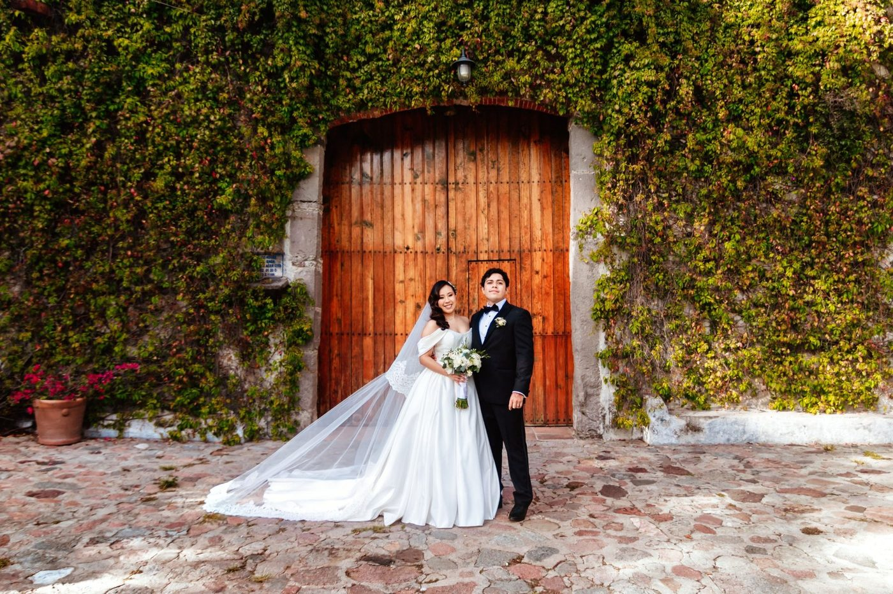
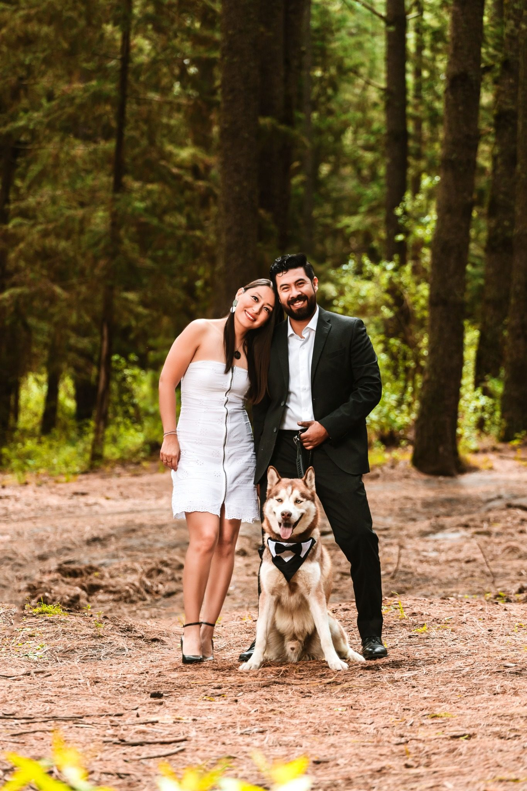
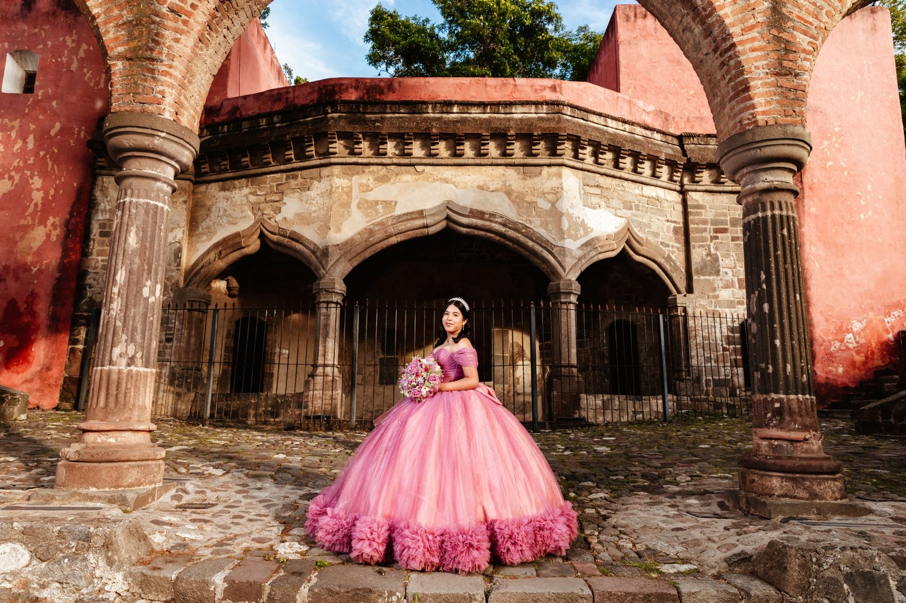
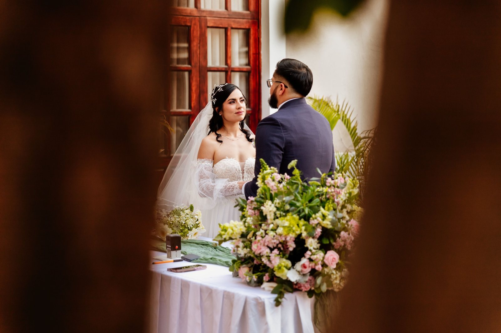
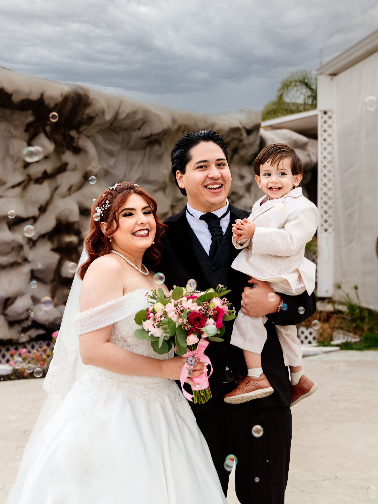
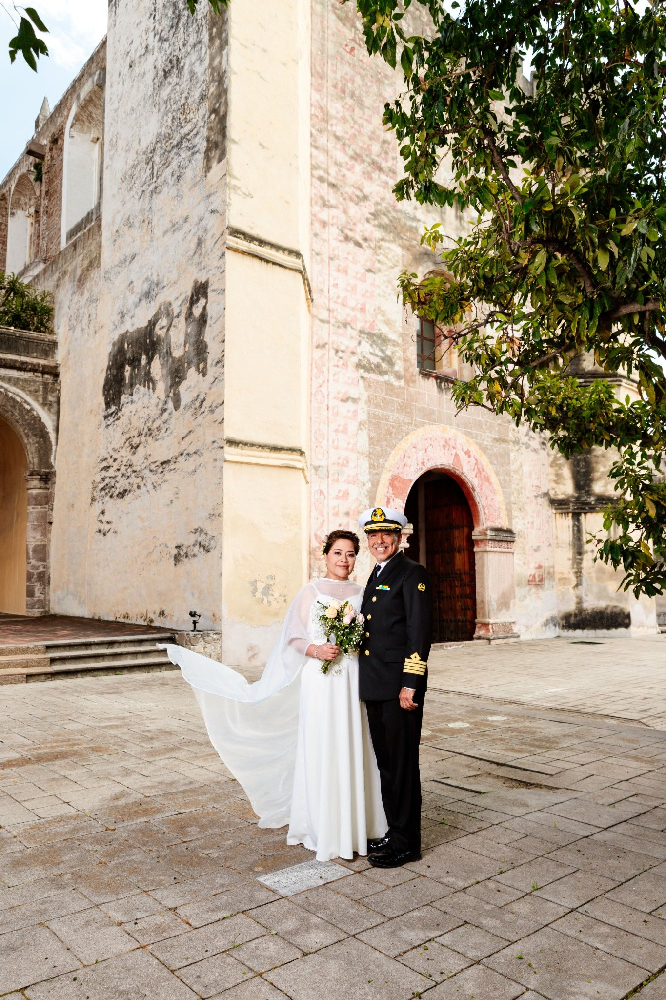
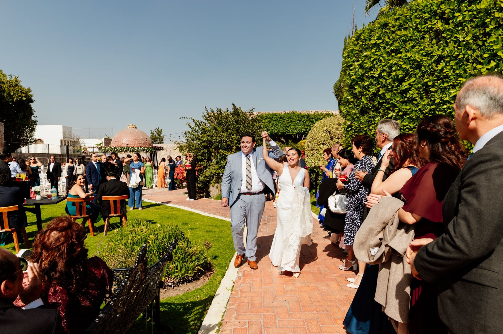
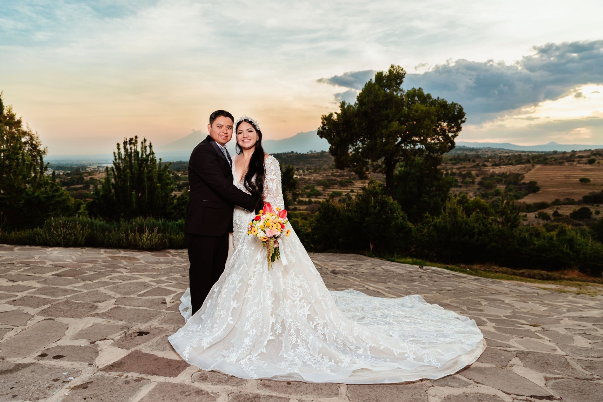
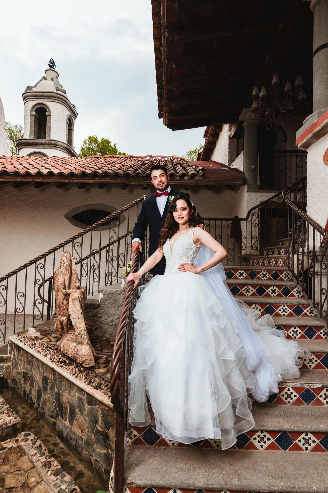
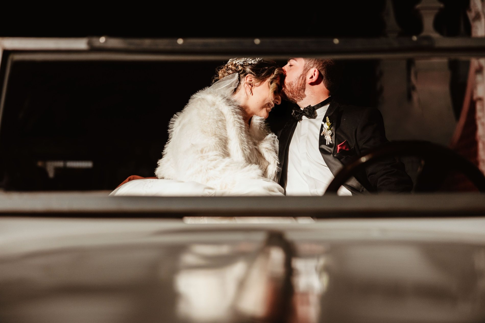

Historia destacada
Nancy & Alfredo
Boda · Hacienda Amalucan · PueblaUna boda elegante entre arquitectura clásica, momentos íntimos y una celebración llena de emoción.
Ver historia
Puebla · Tlaxcala
Snapshot Fotografía
Historias que permanecen en la memoria de las familias durante generaciones.
Nuestra historia
Snapshot comenzó como una propuesta entre dos amigos unidos por el gusto por la fotografía.
Hoy somos un equipo de profesionales especializados en documentar bodas. Héctor Jiménez dirige el área de fotografía y Antonio Reyes el área de video, acompañados por fotógrafos, camarógrafos y editoras que cuidan cada etapa de producción.
Después de más de 400 bodas, seguimos trabajando con el mismo propósito: preservar el amor, la emoción y la forma en que vivieron uno de los días más importantes de su historia.
Historias destacadas

Historia destacada
Una boda elegante entre arquitectura clásica, momentos íntimos y una celebración llena de emoción.
Ver historia
Historia destacada
Ceremonia solemne, retratos urbanos y una recepción elegante con una mirada profundamente romántica.
Ver historia
Historia destacada
Una celebración íntima con auto clásico, luces cálidas y momentos llenos de alegría.
Ver historia
Historia destacada
Una historia llena de cercanía, detalles naturales y momentos espontáneos que reflejan la alegría de compartir con familia y amigos.
Ver historiaHistoria destacada
Una boda con estética moderna, emociones profundas y una narrativa visual pensada para recordarse toda la vida.
Ver historiaLa experiencia Snapshot
Desde la primera conversación hasta la entrega final, cuidamos cada detalle para que ustedes solo vivan el momento.

01Escuchamos su historia y entendemos qué hace único su gran día.
Diseñamos el recorrido ideal para documentar cada momento importante.

03Vivimos el día junto a ustedes con una cobertura discreta y emocional.

04Una colección de recuerdos para revivir su historia toda la vida.
Portafolio editorial
Un recorrido visual por bodas, XV años, ceremonias, arquitectura y emociones reales.











Nuestra filosofía
Agenda tu fecha
Cada boda, cada XV años y cada familia empieza con una conversación.
Enviar WhatsApp